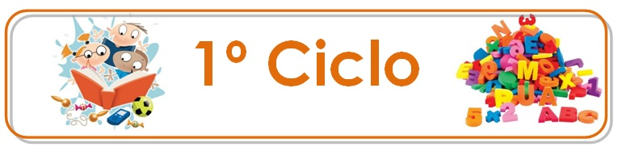
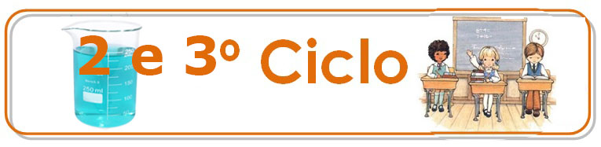
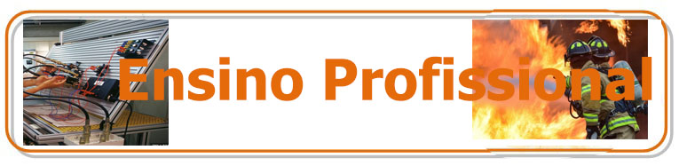

O Programa Curricular do 1º ciclo inclui as seguintes disciplinas: Portugês, Matemática, Estudo do meio, Inglês e Educação Física. Como oferta complementar, a desenvolver ao longo do ano letivo, a nossa escola dispõe das seguintes opções: Algoritmia e Programação,Desenvolvimento Web, Música e Educação Visual (os alunos devem escolher 2).

O Programa Curricular do 2º ciclo inclui as seguintes disciplinas: Portugês, Matemática, Ciências Naturais, Inglês, Educação Física, Educação Visual e Tecnológica, Música e História e Geografia de Portugal. Como oferta complementar, a desenvolver ao longo do ano letivo, a nossa escola dispõe das seguintes opções: Algoritmia e Programação, Desenvolvimento Web (os alunos podem escolher estas 2 em vez de Música e Educação Visual e Tecnológica ).
O Programa Curricular do 3º ciclo inclui as seguintes disciplinas: Portugês, Matemática, Ciências Naturais, Inglês, Educação Física,Educação Visual,História, Geografia, Francês. Como oferta complementar, a desenvolver ao longo do ano letivo, a nossa escola dispõe das seguintes opções: Algoritmia e Programação, Desenvolvimento Web, Alemão (os alunos podem escolher trocar o Francês por Alemão,e a Educação Visual por Algoritmia e Programaçãoou Desenvolvimento Web).

O ensino secundário divide se em ensino regular e ensino profissional.
Ensino regular
Ciências e Tecnologias I e II;
Linguas e Humanidades;
Ciências Socioeconómicas;
Artes Visuais.
Formação Geral destes 4 cursos
Português (10.º, 11.º e 12.º anos)
Língua Estrangeira I ou II
Filosofia (10.º e 11.º anos)
Educação Física (10.º, 11.º e 12.º anos)
Ciências e Tecnologias I e II têm Matemática A, Física e Química A, Biologia e Geologia (I) ou Geometria Descritiva A (II) isto no 10 e 11ºano. No 12ºano as da formação geral mantêm-se juntamente com Matemática A, e os alunos podem escolher 2 opções entre Física A,Química A,Biologia e Alicações Informáticas.
Linguas e Humanidades têm Matemática Aplicacada às Ciências Sociais, História A e Francês. No 12ºano podem escolher 2 opções entre Filosofia,Geografia,Psicologia e Sociologia.
Ciências Socioeconómicas têm Matemática A,Economia A e Geografia A. no 12ºano ano podem escolher 2 opções entre Economia A, Geografia A e Sociologia
Artes Visuais têm Desenho A, Geometria Descritiva A, Matemática B e História da Cultura e das Artes. No 12ºano podem escolher 2 opções entre Oficina de Artes, Oficina de Multimédia B e Materiais e Tecnologias.

Bombeiro/a;
Apoio Psicossocial;
Comercial;
Multimédia;
Eletrónica, Automação e Computadores.